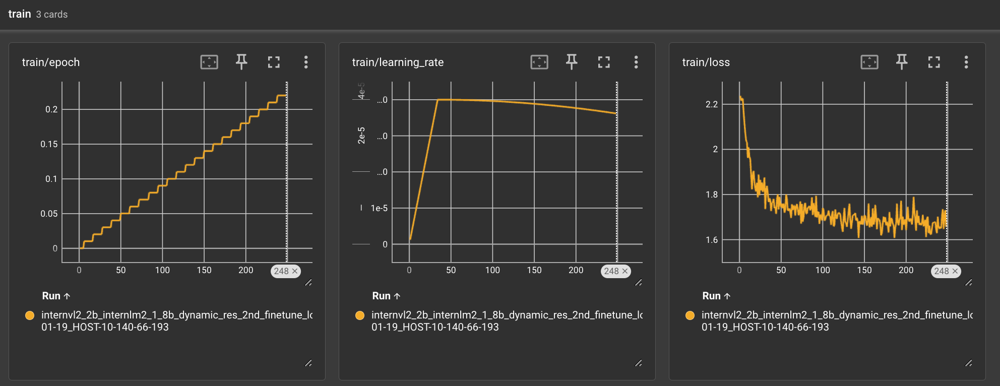

Enhancing InternVL2 on COCO Caption Using LoRA Fine-Tuning#
In this tutorial, I will provide a detailed guide on how to use LoRA fine-tuning to improve the performance of a trained InternVL2 model on COCO Caption.
Preparation#
Before starting, please prepare the InternVL training environment according to the installation guide. Note that Flash Attention requires manual installation following the steps provided. If you encounter any issues, check the issues section on their official repository.
Optionally, you can install apex for efficiency improvements. Apex uses FusedRMSNorm to replace PyTorch’s RMSNorm, which can enhance training speed and save memory. However, installing apex can be challenging, so it is optional.
Model Preparation#
After setting up the environment, navigate to the internvl_chat directory. You will need to download a pre-trained InternVL2 model. The table below lists all available models in the InternVL2 series.
Model Name |
Type |
Params |
Download Link |
Size |
|---|---|---|---|---|
InternVL2-1B |
MLLM |
0.9B |
🤗 HF link |
1.8 GB |
InternVL2-2B |
MLLM |
2.2B |
🤗 HF link |
4.2 GB |
InternVL2-4B |
MLLM |
4.2B |
🤗 HF link |
7.8 GB |
InternVL2-8B |
MLLM |
8.1B |
🤗 HF link |
16 GB |
InternVL2-26B |
MLLM |
25.5B |
🤗 HF link |
48 GB |
InternVL2-40B |
MLLM |
40.1B |
🤗 HF link |
75 GB |
InternVL2-Llama3-76B |
MLLM |
76.3B |
🤗 HF link |
143 GB |
Below are the commands to download these models using huggingface_hub. Choose the model that suits your needs.
cd pretrained/
# pip install -U huggingface_hub
# Download OpenGVLab/InternVL2-1B
huggingface-cli download --resume-download --local-dir-use-symlinks False OpenGVLab/InternVL2-1B --local-dir InternVL2-1B
# Download OpenGVLab/InternVL2-2B
huggingface-cli download --resume-download --local-dir-use-symlinks False OpenGVLab/InternVL2-2B --local-dir InternVL2-2B
# Download OpenGVLab/InternVL2-4B
huggingface-cli download --resume-download --local-dir-use-symlinks False OpenGVLab/InternVL2-4B --local-dir InternVL2-4B
# Download OpenGVLab/InternVL2-8B
huggingface-cli download --resume-download --local-dir-use-symlinks False OpenGVLab/InternVL2-8B --local-dir InternVL2-8B
# Download OpenGVLab/InternVL2-26B
huggingface-cli download --resume-download --local-dir-use-symlinks False OpenGVLab/InternVL2-26B --local-dir InternVL2-26B
# Download OpenGVLab/InternVL2-40B
huggingface-cli download --resume-download --local-dir-use-symlinks False OpenGVLab/InternVL2-40B --local-dir InternVL2-40B
# Download OpenGVLab/InternVL2-Llama3-76B
huggingface-cli download --resume-download --local-dir-use-symlinks False OpenGVLab/InternVL2-Llama3-76B --local-dir InternVL2-Llama3-76B
For this tutorial, we’ll download the InternVL2-2B model. Navigate to the pretrained directory and execute the second command above. After downloading, the directory structure should look like this:
pretrained
└── InternVL2-2B
Data Preparation#
To enhance the InternVL2 model on COCO Caption, we need to prepare the COCO Caption dataset for both training and testing.
Follow these instructions to prepare the COCO Caption data:
mkdir -p data/coco && cd data/coco
# Download COCO images
wget http://images.cocodataset.org/zips/train2014.zip && unzip train2014.zip
wget http://images.cocodataset.org/zips/val2014.zip && unzip val2014.zip
wget http://images.cocodataset.org/zips/test2015.zip && unzip test2015.zip
mkdir -p annotations && cd annotations/
# Download converted annotation files
wget https://github.com/OpenGVLab/InternVL/releases/download/data/coco_karpathy_test.json
wget https://github.com/OpenGVLab/InternVL/releases/download/data/coco_karpathy_test_gt.json
wget https://github.com/OpenGVLab/InternVL/releases/download/data/coco_karpathy_train_567k.zip
unzip coco_karpathy_train_567k.zip
cd ../../../
After downloading, the directory structure should be:
data/coco
├── annotations
│ ├── coco_karpathy_test.json
│ ├── coco_karpathy_test_gt.json
│ └── coco_karpathy_train_567k.jsonl
├── train2014
├── val2014
└── test2015
Evaluating the Original Model#
With the data and model prepared, we can evaluate the InternVL2-2B model on COCO Caption.
Use the following command to test the model with 4 GPUs. Adjust the number of GPUs based on your setup:
GPUS=4 sh evaluate.sh pretrained/InternVL2-2B caption-coco --dynamic
Initial evaluation results might be low since the InternVL2’s SFT data does not include COCO Caption. Here are some expected results:
Bleu_1: 0.640
Bleu_2: 0.463
Bleu_3: 0.320
Bleu_4: 0.214
computing METEOR score...
METEOR: 0.267
computing Rouge score...
ROUGE_L: 0.504
computing CIDEr score...
CIDEr: 0.793
LoRA Fine-Tuning#
Next, we’ll fine-tune the InternVL2-2B model using LoRA. Execute the following command for fine-tuning:
GPUS=8 PER_DEVICE_BATCH_SIZE=4 sh shell/internvl2.0/2nd_finetune/internvl2_2b_internlm2_1_8b_dynamic_res_2nd_finetune_lora.sh
In this script, we set the LoRA rank to 128, which means 6.24% of InternLM2-Chat-1.8B’s parameters will be trainable, totaling 125.8M parameters:
trainable params: 125,829,120 || all params: 2,014,976,000 || trainable%: 6.244695718460171
The total batch size is set to 512, with a per-device batch size of 4, consuming about 32G of memory. Training one epoch on the COCO Caption dataset (566k entries) will require approximately 1100 iterations.
[INFO|trainer.py:1721] 2024-07-31 22:44:12,436 >> ***** Running training *****
[INFO|trainer.py:1722] 2024-07-31 22:44:12,436 >> Num examples = 566,747
[INFO|trainer.py:1723] 2024-07-31 22:44:12,436 >> Num Epochs = 1
[INFO|trainer.py:1724] 2024-07-31 22:44:12,436 >> Instantaneous batch size per device = 4
[INFO|trainer.py:1727] 2024-07-31 22:44:12,436 >> Total train batch size (w. parallel, distributed & accumulation) = 512
[INFO|trainer.py:1728] 2024-07-31 22:44:12,436 >> Gradient Accumulation steps = 16
[INFO|trainer.py:1729] 2024-07-31 22:44:12,436 >> Total optimization steps = 1,106
[INFO|trainer.py:1730] 2024-07-31 22:44:12,440 >> Number of trainable parameters = 125,829,120
Training with 8 A100 GPUs will take approximately 4 hours. If you encounter memory issues, try reducing PER_DEVICE_BATCH_SIZE to 2 or 1.
Please note that the hyperparameters provided here are arbitrary and may not be optimal. You can achieve better performance by tuning the parameters.
Monitoring with TensorBoard#
After starting the training, navigate to the directory:
cd work_dirs/internvl_chat_v2_0/internvl2_2b_internlm2_1_8b_dynamic_res_2nd_finetune_lora_coco
Start TensorBoard with the following command:
tensorboard --logdir ./ --port 10097 --host 0.0.0.0
Then, open your web browser and navigate to http://localhost:10097/ to view the training loss curves and other metrics.

Evaluating the Fine-Tuned Model#
After fine-tuning, evaluate the model on COCO Caption again using the following command with 4 GPUs. Adjust the number of GPUs based on your setup:
GPUS=4 sh evaluate.sh work_dirs/internvl_chat_v2_0/internvl2_2b_internlm2_1_8b_dynamic_res_2nd_finetune_lora_coco caption-coco --dynamic
The fine-tuned model should show significant improvement in COCO Caption evaluation metrics:
Bleu_1: 0.805
Bleu_2: 0.649
Bleu_3: 0.504
Bleu_4: 0.385
computing METEOR score...
METEOR: 0.300
computing Rouge score...
ROUGE_L: 0.595
computing CIDEr score...
CIDEr: 1.312
Merging LoRA Weights#
After evaluating the fine-tuned model, you may want to merge the LoRA weights back into the original InternVL2 model. Follow these steps to accomplish this.
Use the provided script to merge the LoRA weights into the base model. The script takes two arguments: the input path of the fine-tuned model and the output path for the merged model.
python tools/merge_lora.py <input_path> <output_path>
For example:
python tools/merge_lora.py work_dirs/internvl_chat_v2_0/internvl2_2b_internlm2_1_8b_dynamic_res_2nd_finetune_lora_coco/ work_dirs/internvl_chat_v2_0/internvl2_2b_internlm2_1_8b_dynamic_res_2nd_finetune_lora_coco_merge
The script will output the following:
Loading model...
trainable params: 125,829,120 || all params: 2,014,976,000 || trainable%: 6.244695718460171
Loading tokenizer...
Saving model...
Saving tokenizer...
Done!
Wrapping into AutoModel#
After merging the LoRA weights, you can wrap the fine-tuned InternVL2 model into an AutoModel for easier inference or deployment.
First, copy all the Python scripts from the original InternVL2-2B directory to the new merged model directory:
cp pretrained/InternVL2-2B/*.py work_dirs/internvl_chat_v2_0/internvl2_2b_internlm2_1_8b_dynamic_res_2nd_finetune_lora_coco_merge
Next, copy the config.json file from the original InternVL2-2B directory to the new merged model directory:
cp pretrained/InternVL2-2B/config.json work_dirs/internvl_chat_v2_0/internvl2_2b_internlm2_1_8b_dynamic_res_2nd_finetune_lora_coco_merge
After copying the necessary files, you can now load and use the fine-tuned InternVL2 model with AutoModel for inference or deployment.
Conclusion#
This guide provided a step-by-step approach to enhancing the InternVL2 model on COCO Caption using LoRA fine-tuning. By following these instructions, you should be able to achieve improved performance in captioning tasks. COCO Caption is just one example; you can replace it with other downstream datasets for fine-tuning. Happy fine-tuning!